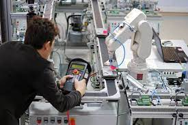

MECHATRONICS

Mechatronics, also called mechatronics engineering, is an interdisciplinary branch of engineering that focuses on the integration of mechanical, electronic and electrical engineering systems,
and also includes a combination of robotics, electronics, computer science, telecommunications, systems, control, and product engineering.
As technology advances over time, various subfields of engineering have succeeded in both adapting and multiplying.
The intention of mechatronics is to produce a design solution that unifies each of these various subfields. Originally, the field of mechatronics was intended to be nothing more than a combination of mechanics and electronics, hence the name being a portmanteau of mechanics and electronics; however, as the complexity of technical systems continued to evolve, the definition had been broadened to include more technical areas.
Next
GO BACK TO HOME